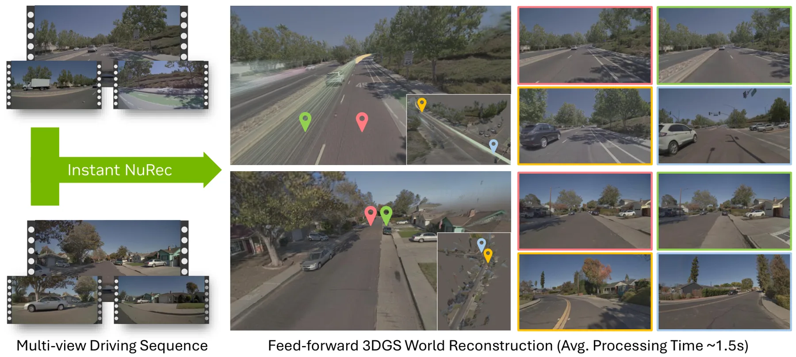
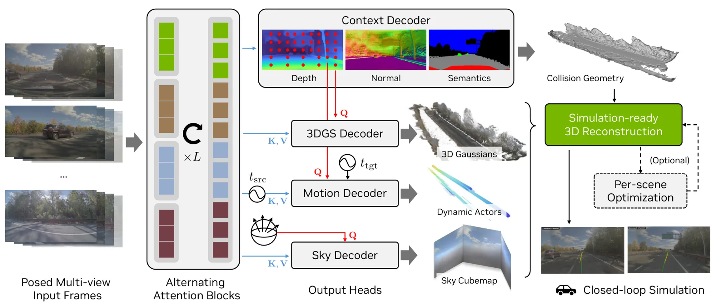

Instant NuRec：驾驶场景的前馈式 3D Gaussian 重建Instant NuRec: Feed-Forward 3D Gaussian Reconstruction for Driving Scene Simulation
速度、动态分层、非针孔支持和闭环仿真集成突出；核心是已标定相机的神经场景重建，仍需核查几何精度、模型规模及分布外泛化。
一句话工作总结
一次前馈将短多相机驾驶日志变成静态/动态分层 3DGS 世界，约 1.5 秒完成并支持闭环仿真。
摘要
Instant NuRec 是面向自动驾驶仿真的前馈神经重建模型，可在一次前向传播中把短多视角驾驶日志转换为可完整仿真的 3DGS 世界。模型接收标定多相机系统输入，输出静态与动态 3DGS 分层、天空 cubemap 和逐相机 ISP 校正，并通过 3DGUT 原生支持非针孔相机。其可在约 1.5 秒内重建 10–20 秒多相机场景，在 Waymo Open Dataset 上的 PSNR 比最强参评基线高 2.01 dB，并已集成到 NuRec，兼容 AlpaSim 闭环仿真。
3D simulation platforms are critical for autonomous driving because they enable end-to-end policy evaluation, thereby reducing development costs and improving safety. In recent years, neural simulation has become predominant, with methods such as NuRec playing a central role; however, these methods remain relatively slow and typically require per-scene tuning. In this work, we present Instant NuRec, a feed-forward neural reconstruction model that turns a short multi-view driving log into a fully simulatable 3D Gaussian Splatting (3DGS) world in a single forward pass. The model accepts multi-view input from a calibrated camera rig and emits a layered output consisting of static and dynamic 3DGS layers, a sky cubemap, and per-camera ISP corrections, while providing native support for non-pinhole camera models via 3DGUT. It reconstructs a 10-20-second multi-camera scene in roughly 1.5 seconds and achieves a PSNR on the Waymo Open Dataset that is 2.01 dB above the strongest evaluated baseline. Instant NuRec is deeply integrated into NuRec and is compatible with AlpaSim for closed-loop simulation.
中文解读摘录
图表/页面预览
{kind=link}

{kind=link}
